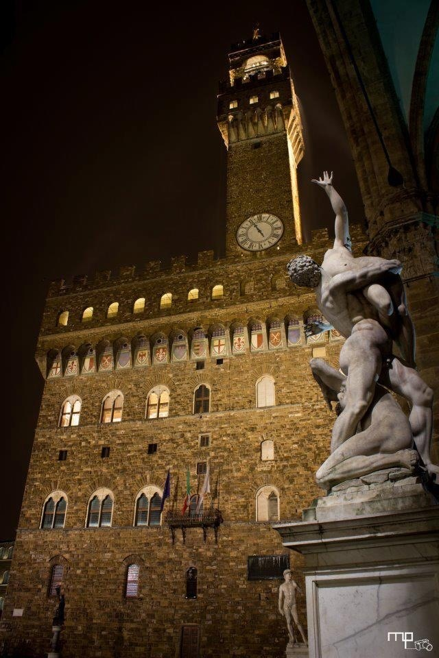
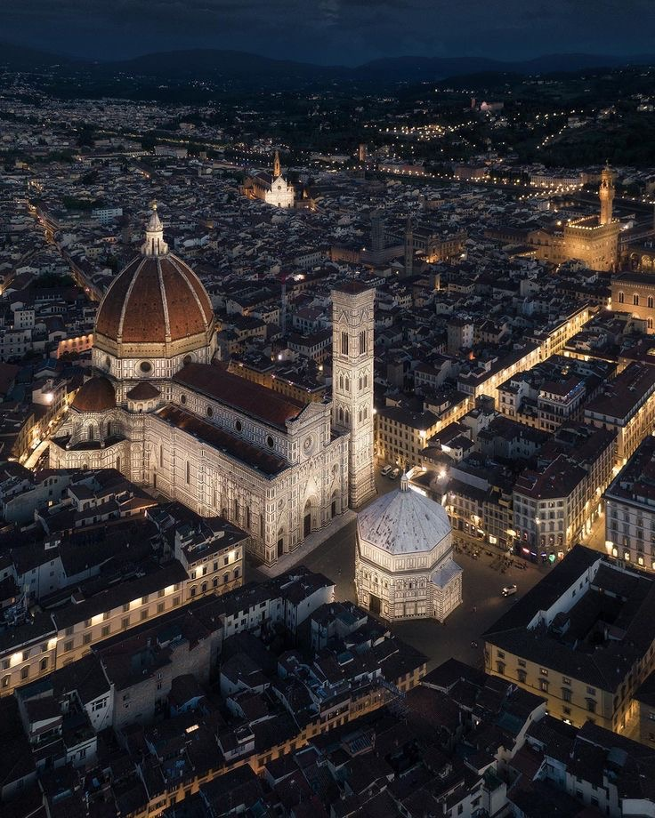
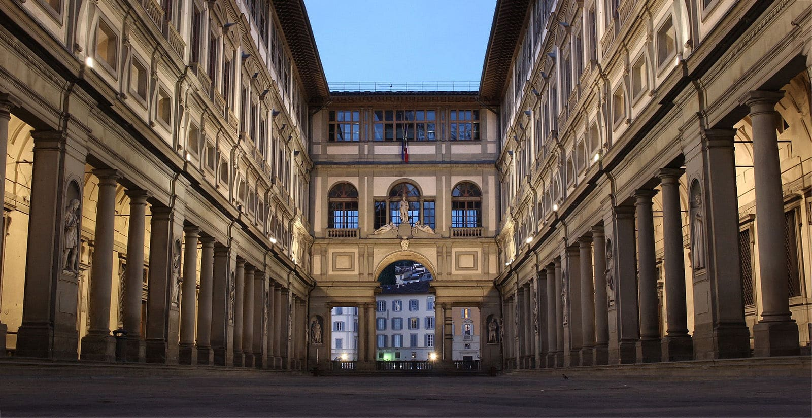
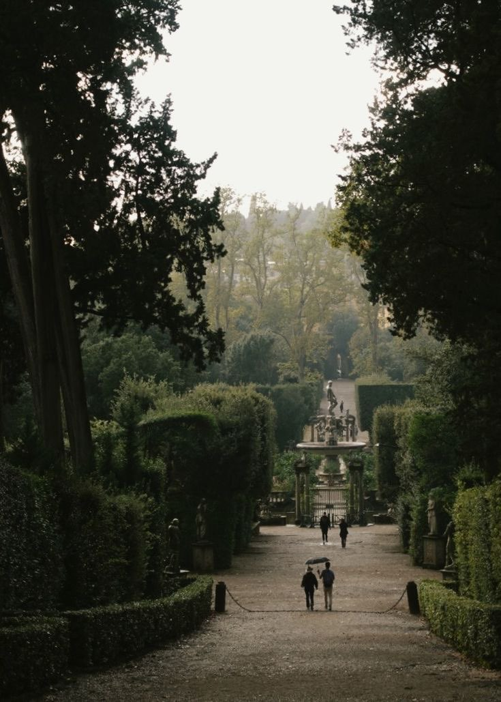
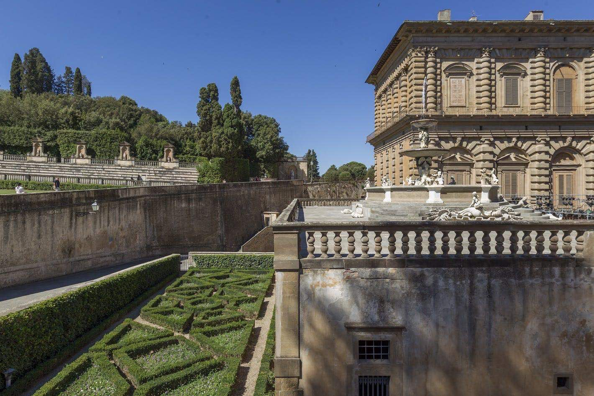
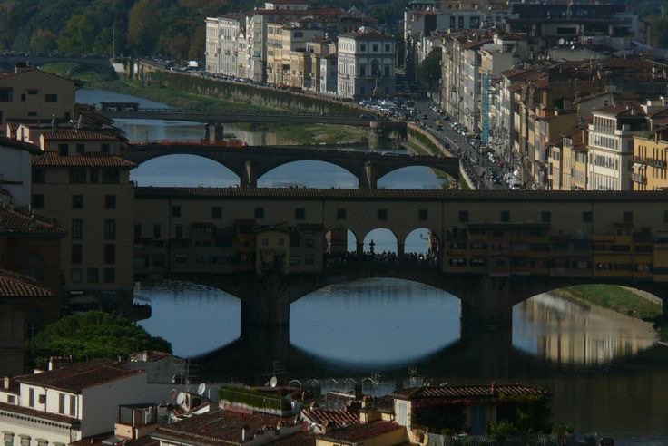
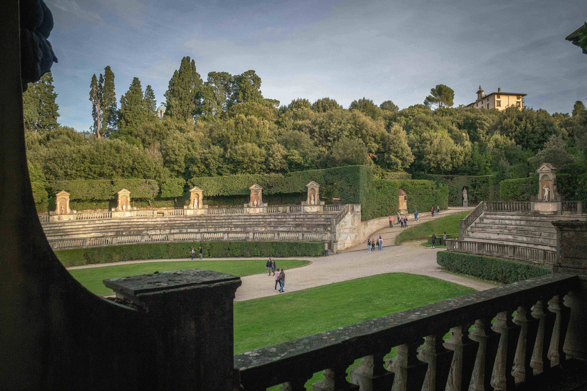
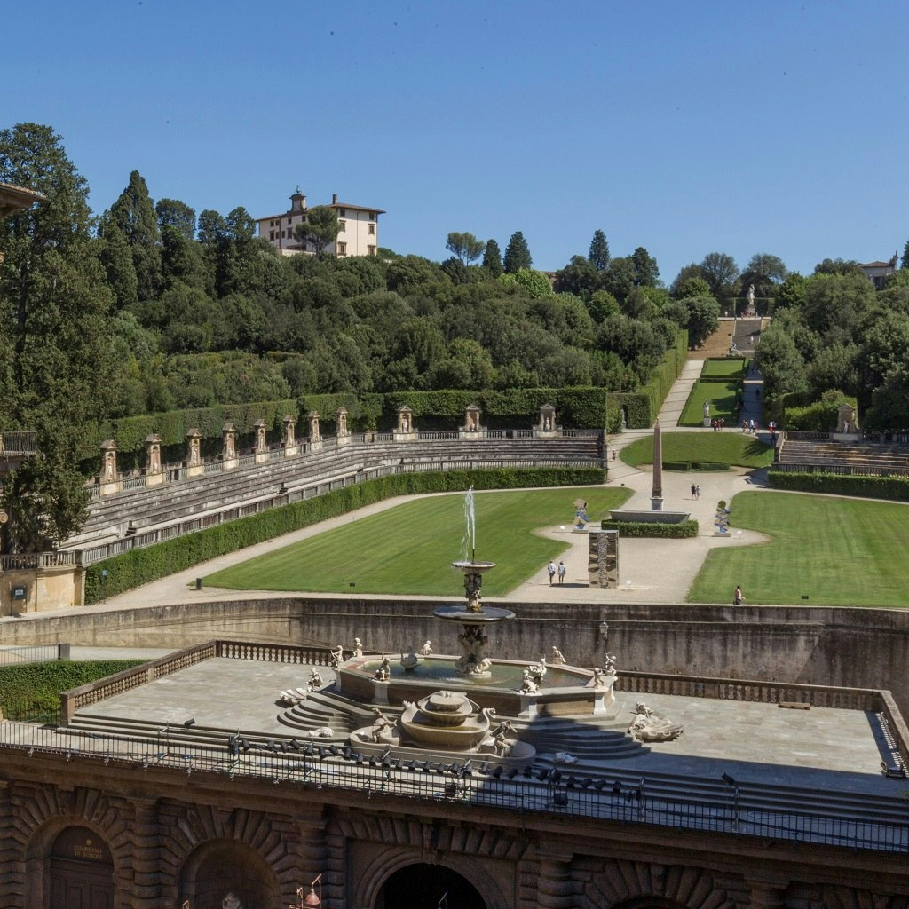
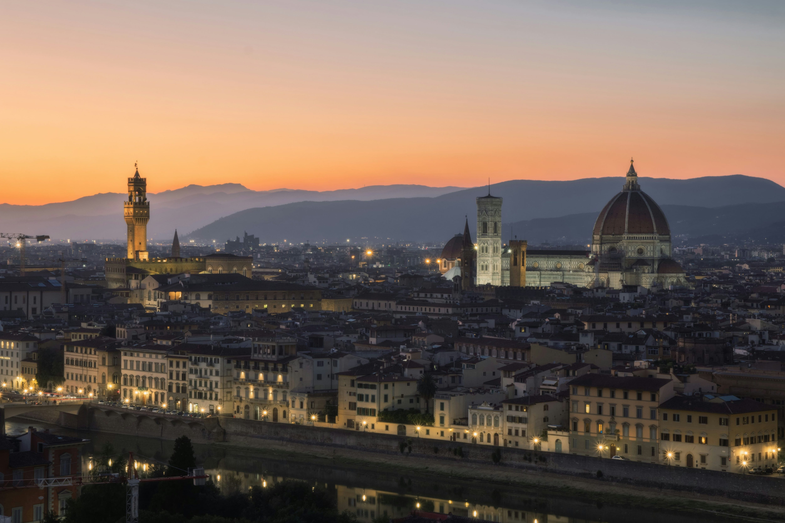
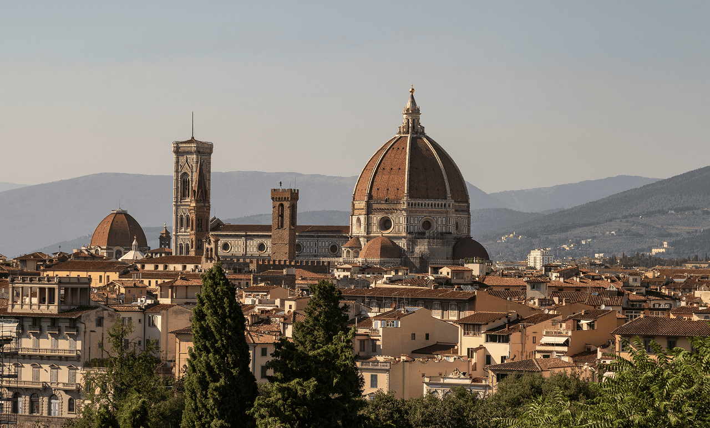

Florencja to nie tylko miasto, to żywe muzeum, w którym każdy kamień opowiada historię wielkich mistrzów. Wewnątrz legendarnego Duomo (Cattedrale di Santa Maria del Fiore) możecie podziwiać niesamowite freski Brunelleschiego na wewnętrznej stronie kopuły. Wejście na sam szczyt oferuje nie tylko panoramiczny widok na miasto, ale pozwala z bliska zobaczyć geniusz architektury XV wieku.
W Galerii Uffizi czekają na Was najsłynniejsze dzieła świata, w tym „Narodziny Wenus” Botticellego. To miejsce, gdzie sztuka staje się namacalna, a bogactwo detali wewnątrz sal wystawowych zapiera dech w piersiach nawet tym, którzy nie uważają się za koneserów malarstwa.
Jednym z najbardziej unikalnych miejsc jest Palazzo Vecchio. Wewnątrz kryje się monumentalna Sala Pięciuset, zdobiona gigantycznymi freskami, które miały demonstrować potęgę medycejskiej Florencji. Przechodząc przez tajne przejścia pałacu, można poczuć atmosferę dawnych intryg i politycznych gier, które kształtowały Europę.
Nie można zapomnieć o Bazylice Santa Croce. To tam znajdują się grobowce Michała Anioła, Galileusza i Machiavellego. Wnętrze świątyni zachwyca witrażami i kaplicami malowanymi przez Giotta, tworząc przestrzeń pełną spokoju i majestatu, idealną do refleksji nad historią ludzkiego geniuszu.










Czas przejścia: 1 godz. 5 min (4.3 km)